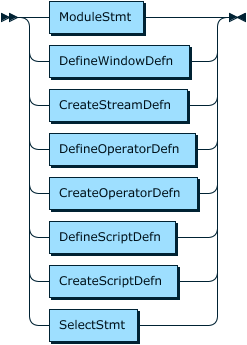
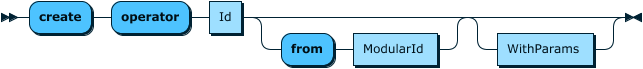
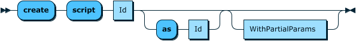
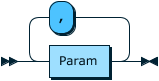
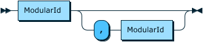

Tremor-Query¶
The tremor query language, tremor-query or trickle is an interpreted statement-oriented language designed for continuous online structured queries with support for filtering, extraction, transformation and streaming of structured data in a stream or event-based processing system.
At its core, tremor-query supports the definition of windows operators, stream definitions and operations on those streams such as select, operator and script.
Structured queries in trickle consume unstructured data that are in and of themselves at least well-formed ( eg: such as JSON ) and produce synthetic events that are also well-formed and in and of themselves unstructured.
The language does not impose schema based constraints on data flowing through the system, although this may produce runtime errors for badly written queries.
The query language interpreter constructs a directed-acyclic-graph or DAG by analysing the dependencies of operators in a user defined query. The input and output streams are then calculated. The DAG model is the same as the pipeline model in previous versions of tremor, but with a rich query language replacing the deprecated tremor yaml format for pipelines.
Principles¶
Safety¶
The language is explicitly not Turing-complete:
- there are no unstructured
gotogrammar forms - there are no unbounded
for,whileordo..whilelooping constructs - the language is built on top of Rust, inheriting its robustness and safety features, without the development overheads
Developer friendly¶
The language adopts a SQL-like syntax for key statement forms and has a path-like syntax for indexing into records and arrays. The statement-oriented query language prefers nested data-structures to tables and columns from traditional ANSI-ISO SQL as most of the data processed through tremor is structured and JSON-like.
The expression language in trickle is based on tremor-script.
Stream-oriented / event-based¶
Tremor-query is designed to process unstructured ( but well-formed ) data events. Event data can be JSON, MsgPack or any other form supported by the tremor event processing system.
Self-documenting¶
The SQL-like syntax enables a natural and familiar style whilst allowing the resulting statements to be compiled into a formal DAG for compile-time checks and to ensure correctness.
Leveraging the tremor-query expression syntax allows rich filtering, transformation, patching, merging and object/array comprehensions to be programmed.
The addition of aggregate functions, and windowing allows batches or a slice in time of events to be summarised or processed together to derive useful synthetic events.
Like its sibling language tremor-script, tremor-query supports the same data-types and is entirely event-driven. It has many parallels for existing tremor users to leverage while learning, yet it is powerful and flexible in its own right.
Extensibility¶
The SQL-based nature of tremor-query means that complex branching, combining or powerful constructs such as in-memory tables can be added following a familiar SQL-like syntax.
The expression-based expression language derived from tremor-script allows computational forms to be extended.
The language core is designed for reuse - currently the expression language is reused in the query language, as are the library of functions available to both. The addition of aggregate functions is currently exclusive to tremor-query as these are only relevant when processing multiple in-flight ( or cached ) events at the same time.
In the future, tremor-query may be retargeted as a JIT-compiled language and other domain specific languages may be integrated as the tremor runtime evolves to meet new uses, demands, and stake-holders.
Performant¶
Data ingested into tremor-query is vectorized via SIMD-parallel instructions on x86-64 or other Intel processor architectures supporting ssev3/avx extensions. Processing streams of such event-data incurs some allocation overhead at this time, but these event-bound allocations are being written out of the interpreter.
The current meaning of performant as documented here means that tremor-query is more efficient at processing metrics-like data than the system it replaces ( telegraf / kapacitor / influx ) which do not support rich proactive and reactive back-pressure mechanisms or efficient asynchronous event-based data distribution between system components.
Productive¶
The tremor-query parsing tool-chain has been designed with ease-of-debugging and ease-of-development in mind. It has builtin support for syntax-highlighting on the console with errors annotating highlighted sections of badly written scripts to simplify fixing such scripts.
The tool-chain inherits most of its core capabilities from the tremor-script and pipeline components of the tremor runtime. These components are already in large-scale production use and battle-hardened; this, in turn, minimises any associated risks with introducing a query language, whilst offering a migration path away from the far less expressive and far less easy-to-use yaml-based pipeline configuration which is more error-prone and verbose.
Language¶
This section details the major components of the tremor-query language.
Tremor-Script¶
Comments, Literals, Paths and Expression forms supported in trickle are the
same as in tremor-script.
Queries¶
Queries are one or many statements separated by ;.
Queries are compiled into a DAG of operator nodes and validated at compile time. At runtime, the resulting executable tremor pipeline is evaluated/interpreted.
Grammar¶


See also Additional Grammar Rules.
Statements¶
Statements can be one of:
- Stream definitions
- Window definitions
- Custom Operator definitions
- Embedded
tremor-scriptdefinitions - Or builtin operations, like the
selectstatement
Stream definitions¶
Stream definitions in tremor-query allow private intermediate streams to be named so that they can be used as the source or sinks in other continuous queries.
Grammar¶

Example¶
create stream passthrough;
select event from in into passthrough; # select default public 'in' stream into passthrough
select event from passthrough into out; # select passthrough into default public 'out' stream
Window definitions¶
Window definitions in tremor-query can be either tumbling or sliding.
A tumbling window is a window configured with a fixed non-overlapping interval of time. The window aggregates events once opened, and continues aggregating until it closes. The window can emit synthetic events upon closing. The window reopens for its next cycle when it closes.
Support for sliding windows has not been implemented yet (it has an open RFC and it will be picked up for a future release).
Tumbling Windows¶
Tremor supports tumbling windows by number of events or by time.
General configuration Parameters:
eviction_period: duration in nanoseconds without events arriving, after which to evict / remove the current window data for a single group.max_groups: maximum number of groups to maintain simultaneously in memory. Groups added beyond that number will be ignored. Per default, tremor does not impose any limit on the number of groups kept simultaneously.
Each select statement maintains the groups for the current windows in an in memory data-structure. This contains the group values as well as the aggregate states.
If your grouping values possibly have a very high cardinality it is possible to end up with runaway memory growth, as per default the group data structures won't be evicted,
unless eviction_period is set. Old groups will be discarded after 2 x eviction_period if no event for those groups arrived.
To configure an upper bound on the number of groups that should be maintained simultaneously for a window, set max_groups.
This will help avoid unbounded memory growth, especially when using emit_empty_windows on time based windows.
Windows based on number of events¶
Size based tumbling windows close when a certain number of aggregated events has been reached.
Configuration Parameters:
size: Number of events until this window closes and emits a downstream event.
The size increment for each event defaults to 1 but can be customized by the embedded script in the window definition.
This script needs to return an unsigned integer denoting the number of events to use for this event.
It is possible to ignore the current event by emitting 0.
Windows based on time¶
Time based tumbling windows close when a certain duration has elapsed. The source for measuring the duration
is the ingest timestamp of the events flowing through by default. The provided embedded script can be used to customize the
source of time measurement. The embedded script must return a number representing a timestamp in nanoseconds.
This way windows using timestamps other than the event ingest time can be built.
Only windows using the event ingest timestamp can be closed when the time in interval is elapsed measured by wall-clock time
independent from event flow with a granularity of 100ms. It is thus possible that empty windows are emitted. Windows using scripts to determine the window elapsed time are considered to deviate from wall clock time and will only close and emit when events flow through them.
Configuration Parameters:
interval: Time interval in nanoseconds after which the window closes.emit_empty_windows- By default, time based windows will only emit, if events arrived. By configuringemit_empty_windowsastruethis window will emit everyinterval, regardless if events arrived or not.
Warning
If you use a window with emit_empty_windows in a group by query and the cardinality is likely huge, consider using max_groups and eviction_period to avoid runaway memory growth such a window will one event per interval and group for which we've seen events before.
Grammar¶

See also Additional Grammar Rules.
Examples¶
For example a 15 second tumbling window based on the event ingest timestamp can be defined as follows
define tumbling window fifteen_secs
with
interval = core::datetime::with_seconds(15),
end;
The same window can be defined using a timestamp that is extracted from the message instead of the ingest time:
define tumbling window fifteen_secs
with
interval = core::datetime::with_seconds(15),
script
event.timestamp
end;
A tumbling window based on number of events that will discard windows when 2 hours have been passed:
define tumbling window with_size
with
size = 1000,
eviction_period = core::datetime::with_hours(2)
end;
Custom Operator definitions¶
Custom operators allow definition, configuration and usage of legacy operators, that have been around before tremor supported the query language. As the query language and deprecated yaml format share the same DAG model and pipeline formats, they are interoperable at runtime and are backwards compatible:
Grammar¶
Operator Definition:

Operator Creation:

See also Additional Grammar Rules.
Example¶
# create a bucketing operator
define grouper::bucket operator kfc;
create operator kfc;
# ...
select event from categorize into kfc;
select event from kfc into out;
Embedded script definitions¶
The tremor-script language can be embedded in the query language natively and this mirrors legacy usage (before v0.9) where it was embedded within yaml-based pipeline configuration. However, the tooling that ships with tremor-query understands both the query language and scripting language dialects with better syntax highlighting and error checking built in, for ease of operator productivity over the deprecated yaml syntax.
Grammar¶
Script Definition Grammar:

Script Creation Grammar:

See also Additional Grammar Rules.
Example¶
define grouper::bucket operator kfc;
define script categorize
script
let $rate = 1;
let $class = event.`group`;
{ "event": event, "rate": $rate, "class": $class };
end;
create script categorize;
# Stream ingested data into categorize script
select event from in into categorize;
create operator kfc;
# Stream scripted events into kfc bucket operator
select event from categorize into kfc;
# Stream bucketed events into out stream
select event from kfc into out;
Select queries¶

The select query is a builtin operation that is the workhorse of the tremor-query language.
An example select operation configured to pass through data from a pipeline's default in stream to a pipeline's default out stream:
select event from in into out;
Select operations can filter ingested data with the specification of a where clause. The clause forms a predicate check on the inbound events before any further processing takes place.
That means the event available to the where clause is the unprocessed inbound event from the input stream (in in this case):
select event from in where event.is_interesting into out;
Select operations can filter data being forwarded to other operators with the specification of a having clause. The clause forms a predicate check on outbound synthetic events after any other processing has taken place.
That means the event available to the having clause is the result of evaluating the select target clause (the expression between select and from).
select event from in into out having event.is_interesting;
Select operations can be windowed by applying a window to the inbound data stream.
define tumbling window fifteen_secs
with
interval = datetime::with_seconds(15),
end;
select { "count": aggr::stats::count() } from in[fifteen_secs] into out having event.count > 0;
In the above operation, we emit a synthetic count every fifteen seconds if at least one event has been witnessed during a 15 second window of time.
Select operations can be grouped through defining a group by clause.
define tumbling window fifteen_secs
with
interval = datetime::with_seconds(15),
end;
select { "count": aggr::stats::count() }
from in[fifteen_secs]
group by set(event.partition)
into out
having event.count > 0;
In the above operation, we partition the ingested events into groups defined by a required event.partition data field on the inbound event. Each of these groups maintains an independent fifteen second tumbling window, and each window upon closing gates outbound synthetic events by a count for that group.
The current implementation of select allows set-based and each-based grouping. These can be composed concatenatively. However cube and rollup based grouping dimensions are not currently supported.
In windowed queries any event related data can only be referenced in those two cases:
- it is used as an argument to an aggregate function
- it is used as expression in the
group byclause
Here is an example of valid and invalid references:
define tumbling window my_window
with
size = 12
end;
select {
"last": aggr::win::last(event.other), # ok, inside aggregate function
"foo": event.foo + 1, # ok, used inside aggregate function
"bad": event.other, # NOT OK
"bad_meta": $my_meta, # NOT OK, same rules apply to event metadata
} from in[my_window]
group by set(event.foo, event.bar)
into out;
Grammar¶
Select Grammar:


Additional Grammar Rules¶
These rules are referenced in the main tremor-query grammar rules above and are listed here as extended reference.
EmbeddedScript:

WithParams:

WithPartialParams:





WindowKind: